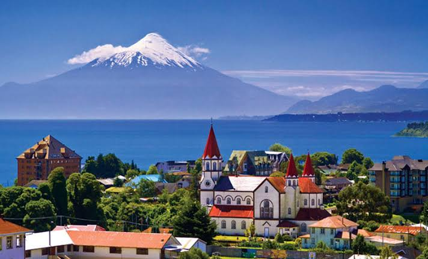

Plate Tectonics, Earthquakes, and Volcanoes


Tectonic plates and boundaries
Chile sits on a convergent plate boundary. Along its whole coast the oceanic Nazca Plate sinks beneath the continental South American Plate, forming the Peru–Chile Trench offshore and pushing up the Andes parallel to the coast (National Geographic Society, 2026). In the far south the Antarctic Plate also subducts, and the Chile Ridge, a spreading center, is dragged under the margin (Amigo, 2021).
Other boundary types matter too. West of South America the Nazca Plate is moving away from the Pacific Plate along the East Pacific Rise, a divergent boundary (National Geographic Society, 2026). On land, the Liquiñe-Ofqui fault zone in the south lines up closely with many volcanoes (Amigo, 2021).
This setting is part of the Ring of Fire, where roughly 90 percent of earthquakes and 75 percent of active volcanoes on Earth occur (National Geographic Society, 2026).
Earthquakes and tsunamis
Subduction stores stress that is released in huge earthquakes. Chile has had some of the strongest ever recorded.
Moment magnitude of major Chilean earthquakes (bar length is relative to a scale of 10).
- 1960, Valdivia (M9.5) The largest earthquake ever recorded broke about 1,000 km of the coast, from Lebu to Puerto Aisén. Death estimates vary, but USGS lists about 1,655 killed and 2,000,000 homeless. Its tsunami also killed people in Hawaii, Japan and the Philippines (U.S. Geological Survey, n.d.-b).
- 2010, Maule (M8.8) This quake and its tsunami killed more than 500 people and destroyed about 220,000 homes (CBC News, 2014).
- 2014 to 2016 Iquique (M8.2), Illapel (M8.3) and Chiloé (M7.6) followed (Ruiz & Madariaga, 2018). The Illapel quake forced about one million people from their homes (Carmagnani et al., n.d.).
How the government helps people prepare
After 1960 Chile developed seismic building codes, and buildings are designed to sway with seismic waves rather than resist them (CBC News, 2014). Engineers credit good codes and good compliance for the low death tolls in later quakes (Associated Press, 2015). Warning failures in 2010 led to sirens, an emergency alert system and better communications (CBC News, 2014). Today the disaster agency SENAPRED sends cell phone alerts and runs the Chile Preparado drill program, and plans call for 850 to 1,000 coastal tsunami sirens (BioBioChile, 2024; Universidad de Chile, n.d.-a).
Rock and mineral resources
Minerals are the backbone of Chile’s economy. Copper accounted for 82 percent of mineral exports and 50 percent of all exports, and mining supported about 328,000 jobs, or 3.5 percent of employment, in 2024 (U.S. Geological Survey, n.d.-a). The state company Codelco produced 26 percent of Chile’s copper (U.S. Geological Survey, n.d.-a). Lithium and iron are the next largest sources of mining investment (U.S. Geological Survey, n.d.-a).
Where the copper goes
Share of Chile’s copper exports by destination, 2024 (U.S. Geological Survey, n.d.-a).
Lithium is also exported to Asia. China took about 71 percent of Chile’s 2024 lithium exports (Andaman Partners, 2025), and the Atacama holds the world’s largest known lithium reserves (Pulitzer Center, n.d.).
Impacts beyond the economy
Depending on one metal makes the economy sensitive to prices. When copper prices fell, GDP growth dropped from 6.1 percent in 2011 to 1.6 percent in 2016 (Carmagnani et al., n.d.). Mining also uses scarce water. Lithium brine pumping in the Salar de Atacama has been linked to shrinking lagoons and fewer flamingos, and Indigenous Atacameño communities say their way of life is at risk, while the companies deny harming local water (Pulitzer Center, n.d.). A 2025 report called some of the water loss irreversible and described new extraction methods that could reduce the damage (Business & Human Rights Resource Centre, 2025).
Mountain ranges
The Andes run along Chile’s whole eastern border and are the world’s longest continental range. They are exceeded in height only by the Himalayas (Britannica Kids, n.d.). The highest peak, Aconcagua (about 6,960 m), is just across the border in Argentina (NASA Earth Observatory, n.d.), and Ojos del Salado on the border, at 6,879 m, is the world’s highest active volcano (National Geographic Society, 2026). Closer to the coast, the lower Coastal Range rarely exceeds 2,000 m (LAC Geo, n.d.).
Weather, water and culture
The Andes shape climate. Near Valparaíso winters are wet and summers dry, while farther south westerly winds drop heavy rain and snow on the Chilean side and leave the Argentine side relatively dry (Britannica Kids, n.d.). Snowmelt supplies drinking water, power and farming in central Chile, but frozen areas are retreating and runoff is decreasing (NASA Earth Observatory, n.d.). Indigenous peoples developed trade networks that crossed the mountains (LAC Geo, n.d.).
Protection and trade routes
The mountains helped keep Chile apart. The Incas failed to conquer central and southern Chile, and the colony’s few outside contacts reinforced its isolation (Carmagnani et al., n.d.). San Martín’s army had to cross the Andes in 1817 to free Chile (Carmagnani et al., n.d.). Even today, the only railroad crossings connect Chile with Argentina and Bolivia (Britannica Kids, n.d.).
Volcanoes
Chile has 92 volcanoes considered active, grouped into central, southern and austral zones, and they are monitored by SERNAGEOMIN through its volcano observatory (Amigo, 2021).
| Volcano | Type | Elevation | Notes |
|---|---|---|---|
| Villarrica | Stratovolcano | 2,847 m | Active lava lake; about 40 km² of glaciers; lahars have damaged towns (Smithsonian Institution, n.d.-c; Volcano World, n.d.) |
| Osorno | Stratovolcano | about 2,650 m | Symmetrical, glacier-covered cone above lakes Llanquihue and Todos los Santos (Smithsonian Institution, n.d.-b) |
| Calbuco | Composite (stratovolcano) | add | Southeast of Lake Llanquihue; erupted in April 2015 (Smithsonian Institution, n.d.-a) |
| Ojos del Salado | add | 6,879 m | On the Chile–Argentina border; highest active volcano (National Geographic Society, 2026) |


Eruptions and their effects
- 2008, Chaitén The volcano was unmonitored when it erupted. The town was uninhabitable for years (The Clinic, 2021), and the eruption led Chile to create a national volcano hazards program (Amigo et al., 2015).
- 2008, Llaima Conguillío National Park and nearby villages were evacuated (The Clinic, 2021).
- 2015, Villarrica and Calbuco Calbuco sent plumes above 15 km (Smithsonian Institution, n.d.-a). It had been on green alert, and about 1,500 people were evacuated at first (Klemetti, 2015). Ash reached as far as Venezuela, and Villarrica’s eruption closed roads and schools (The Clinic, 2021).
Benefits and threats
Volcanic ash creates andosols, nutrient-rich soils that give the Central Valley excellent farming potential (Encyclopaedia Britannica, n.d.-a). The threats are ash, lahars from melting ice and snow, and eruptions with little warning (Klemetti, 2015).
Explore more
This interactive story map from Esri covers geologic hazards in Chile (Lincoln, 2023).